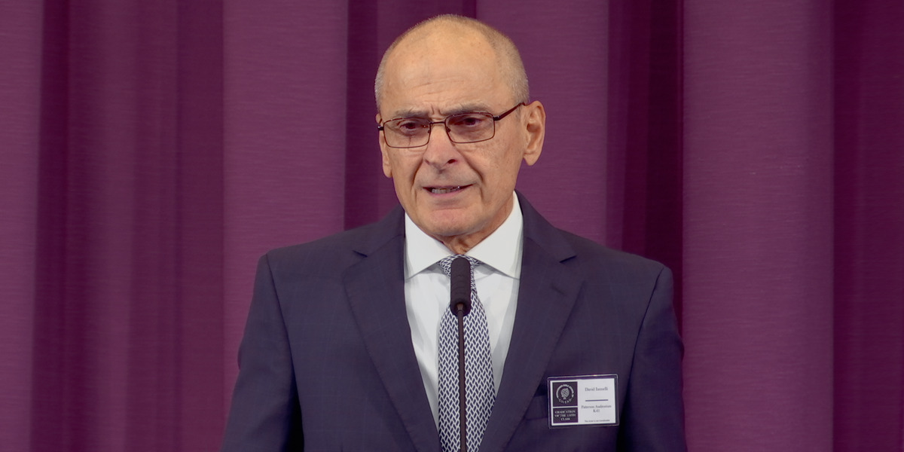

Nossa Vida Cristã · 2 a 8 de novembro de 2026 · parte 7 (15 min) · consideração com vídeo
O resumo do vídeo, com os minutos de cada parte, e cinco lições prontas para a pergunta “Que lições você
aprendeu?”. Cada lição tem o texto exato do seu JW Library, o que o vídeo e as publicações dizem, um comentário
pronto de até 30 segundos e um segundo comentário.
⏱ 15 min🎬 vídeo de 10:38🙋 5 lições prontas🔎 Guia de Pesquisa incluído
O texto da apostila
7. Nunca se Esqueça do Que Jeová se Lembra (15 min) Consideração.
Mostre o VÍDEO. Depois, pergunte: Que lições você aprendeu?

Vídeo “David Iannelli: Nunca se esqueça do que Jeová se lembra” (10:38), discurso feito na formatura
da turma 154 de Gileade
O vídeo em resumo
0:001 min
A pergunta
Existe algo que Jeová se lembra e que nós nunca devemos esquecer. Tem a ver com o modo como Jeová nos encara e
lida conosco. A resposta está no Salmo 103:14: “lembra-se de que somos pó”.
0:574 min
O que quer dizer “Jeová se lembra de que somos pó”
Jeová sabe que somos imperfeitos e quer perdoar quem peca e se arrepende. O contexto mostra isso: Davi fala de
perdão, quatro vezes de misericórdia e quatro vezes de amor leal. O amor leal é como uma casa grande, e a
misericórdia e o perdão são quartos espaçosos dela. Adão foi feito do pó, e depois do pecado “ser pó” ganhou outro
sentido: as fragilidades da imperfeição herdada. E “se lembra” é uma memória que leva à ação.
Resumo em três pontos: limitações, expectativas realistas e atitudes. Jeová entende as nossas
limitações, já espera que vamos errar e sente vontade de perdoar quando nos arrependemos.
5:072 min 15
Primeira maneira: promova a paz e a união imitando o perdão de Jeová
A cena do futebol: o irmão que torce o tornozelo. Quando ficar chateado com alguém, pergunte: ‘Será que estou me
esquecendo daquilo que Jeová se lembra?’ Pensar nas limitações ajuda a ajustar as expectativas e a deixar de lado
o ressentimento.
7:222 min 30
Segunda maneira: fortaleça as pessoas
Ajude o irmão que não consegue parar de se sentir culpado a se convencer de que Jeová o perdoou. Use o Salmo
103:14 para lembrar por que Jeová quer perdoar, e o versículo 12 para mostrar até onde vai o perdão: o leste e o
oeste nunca se encontram, e não sobra nem o “cheiro” do pecado.
9:441 min
Conclusão
Aos formandos: usar o que aprenderam em Gileade para fortalecer a organização e os irmãos. E para todos: “Nunca
podemos nos esquecer do que Jeová se lembra e também precisamos nos esforçar para não lembrar o que Jeová
esquece.”
Que lições você aprendeu?
Lição 1
Jeová se lembra de que somos pó: ele sabe que somos imperfeitos e quer perdoar
Salmo 103:14 Pois ele sabe bem como somos formados, Lembra-se de que somos pó.Tradução do Novo Mundo (edição de estudo), do seu JW Library
💡 O que o vídeo e as publicações dizem
No vídeo (1:03), o irmão explica de maneira simples: Jeová sabe muito bem que nós somos imperfeitos, e ele quer perdoar a pessoa que peca e se arrepende.
A Sentinela de agosto de 2025 (p. 16 § 12) diz o mesmo: esse é um dos motivos de Jeová estar sempre pronto a perdoar os servos arrependidos.
O Achegue-se a Jeová (cap. 26 § 4) lembra que Jeová é comparado a um oleiro, e nós a vasos de barro. Ele trata a gente levando em conta a fragilidade da nossa natureza.
🙋 Comentário pronto (até 30 segundos)
Aprendi que Jeová conhece bem como nós somos feitos. Ele sabe que somos pó, que somos imperfeitos e que vamos errar. Mas isso não faz ele desistir de nós. O vídeo explica que, por saber disso, Jeová tem vontade de perdoar quem se arrepende. Isso me dá coragem para orar e pedir perdão em vez de me esconder dele.
➕ Para um segundo comentário
Para os de idade: o corpo cansado, a memória que falha, a força que já não é a mesma. Jeová sabe disso também. Ele “sabe bem como somos formados”, e não exige de nós mais do que podemos dar.
Lição 2
“Se lembra” quer dizer que a lembrança leva Jeová a agir
Salmo 103:13 Assim como o pai é misericordioso com os filhos, Jeová é misericordioso com os que o temem.Tradução do Novo Mundo (edição de estudo), do seu JW Library
💡 O que o vídeo e as publicações dizem
O vídeo (4:01) explica que a palavra hebraica traduzida “lembra-se” pode ter o sentido de “memória ativa”, uma lembrança que move à ação.
A Sentinela de agosto de 2025 (p. 17 § 13): essa palavra “envolve não apenas lembrar de algo, mas também fazer algo positivo em seguida”. Jeová entende que vamos errar e “se sente motivado a nos perdoar e mostrar misericórdia quando nos arrependemos de coração”.
A Sentinela de 1/8/2011 (p. 13) lembra o versículo 13: assim como o pai é misericordioso com os filhos, Jeová é misericordioso, em especial quando o coração arrependido está “quebrantado e esmagado”.
🙋 Comentário pronto (até 30 segundos)
Uma coisa que eu não sabia: quando a Bíblia diz que Jeová se lembra de que somos pó, não é só uma lembrança. O vídeo explica que a palavra hebraica dá a ideia de uma lembrança que leva à ação. Jeová lembra que somos imperfeitos e faz alguma coisa: mostra misericórdia e perdoa quem se arrepende.
➕ Para um segundo comentário
É como um pai que lembra que o filho é pequeno. Ele não fica só pensando nisso; ele se abaixa, ajuda e tem paciência. É a comparação do próprio Salmo 103:13.
Lição 3
Ter expectativas realistas com os irmãos ajuda a perdoar
Salmo 103:10 Ele não nos trata conforme os nossos pecados, Nem nos retribui o que merecemos pelos nossos erros.Tradução do Novo Mundo (edição de estudo), do seu JW Library
💡 O que o vídeo e as publicações dizem
O vídeo (6:09) usa uma cena: num jogo de futebol, um irmão torce o tornozelo. Ninguém espera que ele volte a jogar driblando. Os outros veem a limitação, ajustam o que esperam dele e o tratam com bondade, até ajudam ele a sair do campo.
Com a imperfeição é igual, mas é fácil esquecer. A sugestão do vídeo: quando começar a ficar chateado com o que alguém fez ou disse, pare e pergunte: ‘Será que estou me esquecendo daquilo que Jeová se lembra?’
Pensar nas limitações do irmão ajuda a deixar de lado o ressentimento e contribui para a paz e a união.
🙋 Comentário pronto (até 30 segundos)
Gostei da ilustração do tornozelo torcido. Ninguém fica bravo com o irmão machucado porque ele não corre. Todo mundo entende e ajuda. O vídeo diz que a imperfeição também é uma limitação, só que a gente esquece. Então, quando alguém me magoar, posso me perguntar: será que estou esquecendo o que Jeová lembra? Isso ajuda a perdoar.
➕ Para um segundo comentário
Para os de idade: às vezes o irmão mais novo fala alto, esquece de cumprimentar, chega atrasado. Lembrar que ele também é pó ajuda a gente a ter paciência, como Jeová tem com a gente.
Lição 4
Podemos ajudar quem não consegue parar de se sentir culpado
Salmo 103:12 Tão longe como o nascente é do poente, Tão longe ele põe de nós as nossas transgressões.Tradução do Novo Mundo (edição de estudo), do seu JW Library
💡 O que o vídeo e as publicações dizem
O vídeo (7:39) fala do irmão que não consegue parar de se sentir culpado pelos erros do passado. Ele está se esquecendo do que Jeová se lembra e, ao mesmo tempo, se lembrando do que Jeová já esqueceu.
O Achegue-se a Jeová (cap. 26 § 9): o leste e o oeste “estão no ponto mais distante um do outro; esses dois pontos cardeais nunca se encontram”. Quando perdoa, Jeová coloca os nossos pecados “o mais longe que podemos imaginar”.
A Sentinela de agosto de 2025 (p. 18 § 14): um simples cheiro pode trazer uma lembrança. Mas, quando Jeová perdoa, não sobra nenhum restinho de cheiro que faça ele se lembrar do pecado e usar isso contra nós.
🙋 Comentário pronto (até 30 segundos)
O vídeo mostrou como ajudar um irmão que vive se sentindo culpado. Podemos ler com ele o Salmo 103:12. O leste e o oeste nunca se encontram. É lá longe que Jeová põe o pecado que ele perdoou. E a Sentinela de agosto de 2025 diz que não sobra nem o cheiro daquele erro. Se Jeová não fica lembrando, nós também não precisamos ficar.
➕ Para um segundo comentário
Um cheiro de comida pode trazer de volta uma lembrança de infância. O vídeo usou essa ideia: quando Jeová perdoa, ele tira de perto até o “cheiro” do pecado. Nada fica ali para estragar a nossa amizade com ele.
Lição 5
Nunca esquecer o que Jeová se lembra, e não lembrar o que Jeová esquece
Salmo 103:2-32 Que a minha alma louve a Jeová; Que nunca se esqueça de tudo que ele fez. 3 Ele perdoa todos os seus erros E cura todas as suas doenças;Tradução do Novo Mundo (edição de estudo), do seu JW Library
💡 O que o vídeo e as publicações dizem
O Salmo 103 começa com Davi dizendo a si mesmo para nunca se esquecer do que Jeová faz. E a primeira coisa que ele cita é: “Ele perdoa todos os seus erros” (v. 3).
No vídeo (2:22), o amor leal de Jeová é comparado a uma casa bem grande, e a misericórdia e o perdão são quartos espaçosos dessa casa.
A frase final do vídeo (10:21): “Nunca podemos nos esquecer do que Jeová se lembra e também precisamos nos esforçar para não lembrar o que Jeová esquece.”
🙋 Comentário pronto (até 30 segundos)
A lição que eu levo é a frase do final: nunca esquecer o que Jeová se lembra, e não ficar lembrando o que Jeová esquece. Jeová lembra que somos pó, e isso me ajuda a ter paciência com os irmãos. E ele esquece o pecado que já perdoou, então eu não preciso ficar me castigando por um erro que ele já tirou de perto de mim.
➕ Para um segundo comentário
O vídeo comparou o amor leal de Jeová a uma casa grande, com quartos espaçosos de misericórdia e perdão. Tem lugar para todos nós lá dentro.
Como conduzir os 15 minutos
0:0030 s
Introdução curta
“Existe uma coisa que Jeová sempre lembra a nosso respeito. Vamos ver o que é, e por que nós
também não podemos esquecer.”
0:3010:38
Vídeo
Deixe o Salmo 103 aberto: o irmão pede isso no começo do vídeo.
11:103 min 30
“Que lições você aprendeu?”
Dá para uns cinco ou seis comentários curtos. Se ficar parado, puxe com perguntas de apoio:
“O que quer dizer Jeová se lembrar de que somos pó?” (lições 1 e 2)
“O que a ilustração do tornozelo torcido nos ensina?” (lição 3)
“Como o Salmo 103:12 pode ajudar alguém que vive se sentindo culpado?” (lição 4)
14:4020 s
Fecho
“Nunca vamos esquecer o que Jeová se lembra: que somos pó. E não vamos ficar lembrando o que ele já
esqueceu.”
Do Guia de Pesquisa, para ir mais fundo
Salmo 103:14: “Aceite o perdão de Jeová” (w25.08 pp. 16-18 §§ 12-13); Um Deus “sempre pronto a perdoar”
(cl cap. 26 § 4); lff lição 40 pontos 1-5; “Embora seja de pó, continue avançando!” (w94 1/9 8-13).
Salmo 103:12: “O perdão de Jeová: o que significa para você?” (w25.02 8-13); w25.08 p. 18 § 14; cl cap.
26 § 9; ijwbq artigo 189 §§ 14-15.
Salmo 103:11, 13: “Jeová se lembra de que somos pó” (mwb16.08 p. 5); Ele se lembra de que “somos pó”
(w11 1/8 p. 13 §§ 3-6).